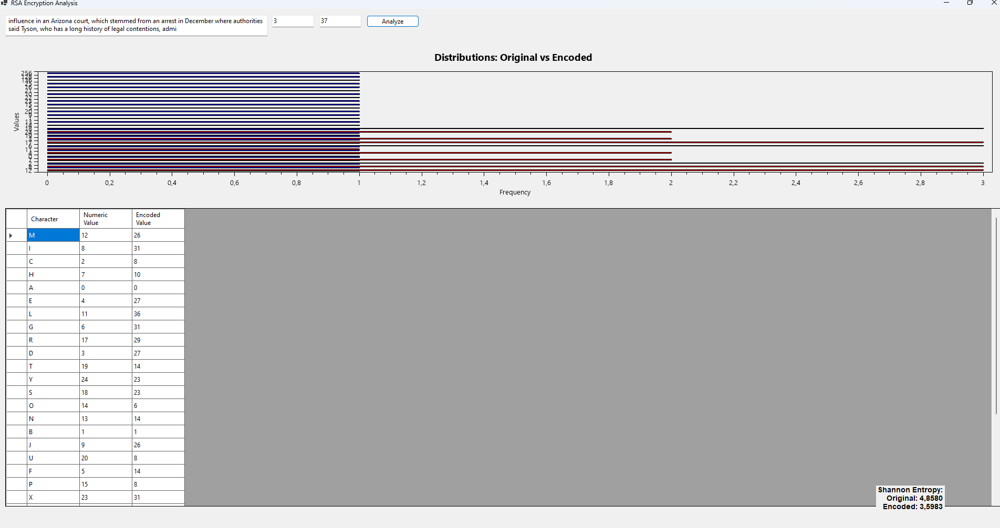

<!DOCTYPE html>
<html lang="it">

<head>
    <meta charset="UTF-8">
    <meta name="viewport" content="width=device-width, initial-scale=1.0">
    <title>RSA Encryption and Analysis</title>
    <link href="https://cdnjs.cloudflare.com/ajax/libs/font-awesome/5.15.4/css/all.min.css" rel="stylesheet">
    <link href="https://cdn.jsdelivr.net/npm/bootstrap@5.3.0-alpha1/dist/css/bootstrap.min.css" rel="stylesheet">
    <link rel="stylesheet" href="https://stackpath.bootstrapcdn.com/bootstrap/4.5.2/css/bootstrap.min.css">
    <link rel="stylesheet" href="https://cdnjs.cloudflare.com/ajax/libs/font-awesome/5.15.3/css/all.min.css">

    <link rel="stylesheet" type="text/css" href="button-styles.css">
    <style>
 body {
    background-color: #121212;
    color: #ffffff;
    font-family: Arial, sans-serif;
    line-height: 1.8;
    margin-bottom: 30px;
}

h1, h2, h3 {
    color: #007bff;
}

/* Custom button styling */
.custom-btn {
    background-color: #007bff;
    color: white;
    padding: 10px 20px;
    font-size: 1rem;
    font-weight: bold;
    border-radius: 50px;
    transition: background-color 0.3s, transform 0.3s;
}

.custom-btn i {
    margin-right: 8px;
}

.custom-btn:hover {
    background-color: #0056b3;
    transform: translateY(-3px);
}

.container-custom {
    margin-top: 40px;
    padding: 20px;
}

.section-title {
    color: #007bff;
    font-weight: bold;
    margin-bottom: 15px;
}

.paragraph {
    margin-bottom: 30px;
    font-size: 1.1rem;
}

.card {
    border-radius: 15px;
    background-color: #343a40;
    transition: transform 0.3s ease, box-shadow 0.3s ease;
    margin-bottom: 20px;
}

.card:hover {
    transform: translateY(-10px);
    box-shadow: 0px 10px 20px rgba(0, 0, 0, 0.1);
}

.card-header {
    background-color: #444;
    border-radius: 15px 15px 0 0;
    color: #ffffff;
    font-weight: bold;
    font-size: 18px;
}

.card-body {
    background-color: #1d1f1f;
    padding: 20px;
    border-radius: 0 0 15px 15px;
}

.card-footer {
    background-color: #444;
    text-align: center;
    border-radius: 0 0 15px 15px;
}

.card-body pre {
    background-color: #2c2f34;
    padding: 15px;
    border-radius: 8px;
    font-size: 16px;
    color: white;
    white-space: pre-wrap;
    word-wrap: break-word;
    display: none;
}

.highlight {
    font-weight: bold;
}

.home-btn, .optional-btn {
    display: inline-flex;
    align-items: center;
    padding: 10px 20px;
    margin-top: 20px;
    border: 2px solid transparent;
    border-radius: 25px;
    background-color: #007bff;
    color: white;
    text-decoration: none;
    transition: background-color 0.3s, border 0.3s;
    cursor: pointer;
}

.home-btn:hover, .optional-btn:hover {
    background-color: transparent;
    border: 2px solid #007bff;
    color: #007bff;
}

.home-btn i, .optional-btn i {
    margin-right: 0;
}

.home-btn:hover i, .optional-btn:hover i {
    color: #007bff;
}

.button-container {
    display: flex;
    justify-content: space-between;
    align-items: center;
}

.img-container {
    text-align: center;
    margin: 30px 0;
}

/* Improved carousel image zoom effect and text overlay */
.carousel-item {
    position: relative;
}

.carousel-item img {
    max-height: 500px;
    object-fit: cover;
    width: 100%;
    transition: transform 0.3s ease;
}

.carousel-item img:hover {
    transform: scale(1.1);
}

/* Icona a tendina */
.dropdown-btn {
    background: none;
    border: none;
    color: white;
    font-size: 1.5rem;
    cursor: pointer;
    transition: transform 0.3s ease;
}

.dropdown-btn:hover {
    transform: scale(1.1);
}

/* Contenitore delle opzioni a tendina */
.dropdown-content {
    display: none;
    position: absolute;
    top: 35px;
    left: 50%;
    transform: translateX(-50%);
    background-color: #333;
    border-radius: 5px;
    width: 150px;
    z-index: 10;
}

.dropdown-content a {
    color: white;
    padding: 10px;
    text-decoration: none;
    display: block;
    font-size: 1rem;
}

.dropdown-content a:hover {
    background-color: #007bff;
}

/* Mostra il menu a tendina quando cliccato */
.dropdown-btn:focus + .dropdown-content,
.dropdown-btn:active + .dropdown-content,
.carousel-item:hover .dropdown-content {
    display: block;
}

.carousel-control-prev, .carousel-control-next {
    color: #007bff;
}

/* Card Header Icon */
.card-header i {
    color: #007bff;
}

/* New layout for cards in a single column */
@media (max-width: 768px) {
    .col-md-4 {
        flex: 0 0 100%;
        max-width: 100%;
    }
}

.blue-text {
    color: #007bff;
    font-weight: bold;
}

    </style>
</head>

<body>
    <div class="container">
        <!-- Back to Home Button -->
        <button id="backHomeBtn" class="btn btn-home">
            <i class="fas fa-home"></i> Back to Home
        </button>

        <!-- JavaScript to handle button click -->
        <script>
            document.getElementById('backHomeBtn').addEventListener('click', function() {
                window.location.href = 'index.html'; // Change 'index.html' to your homepage URL
            });
        </script>
    </div>

    <div class="container container-custom">
        <h1>RSA Encryption and Analysis</h1>

      
        <p class="paragraph">
            In this cryptographic analysis, we implemented a statistical approach to assess the strength of encryption algorithms, specifically focusing on the RSA algorithm, using entropy as a measure of data randomness. The task involved examining how different parameter combinations for the exponent <span class="blue-text">\( e \)</span> and modulus <span class="blue-text">\( P \)</span> affected the entropy of the encrypted data.
            The encryption mechanism used in this analysis was based on RSA, a widely used public-key cryptosystem. The main focus was to evaluate how various choices of exponent and modulus influence the entropy of the original and encoded distributions. The RSA encryption formula, \( E = L^e \mod P \), was used to transform the plaintext values (represented as integers corresponding to letters in the input text) into encrypted values. The entropy of both the original and the transformed distributions was calculated and compared to highlight how well the encryption preserved the randomness of the data.
        </p>
        <p class="paragraph">
            Statistical analysis plays a critical role in understanding cryptographic algorithms, as it provides insights into how transformations affect data distributions and security. By applying statistical methods to cryptographic operations, we can evaluate how well an algorithm preserves the complexity and randomness of the original data after encryption. For example, when analyzing the RSA algorithm, we tested two sets of parameters: <span class="blue-text">\( e = 3 \), \( P = 37 \)</span> and <span class="blue-text">\( e = 11 \), \( P = 503 \)</span>. In the first case, there was a significant gap between the entropy of the original and encoded distributions, highlighting a loss of diversity due to the limited range of possible encoded values. This suggests that with smaller primes or lower exponents, the transformation could lead to predictable patterns, which could potentially be exploited by attackers. However, with <span class="blue-text">\( e = 11 \)</span> and <span class="blue-text">\( P = 503 \)</span>, the entropies were equal, indicating that the encoded distribution maintained the same level of uncertainty as the original. This outcome shows that using larger primes and exponents allows for a more robust encryption, where the transformed data retains its randomness and entropy, making it more resistant to attacks that rely on analyzing predictable patterns in the ciphertext. These observations align with the theoretical limit of entropy, which cannot exceed the maximum of the original data. Understanding such behaviors is essential in cybersecurity, where the goal is to optimize cryptographic strength while ensuring transformations preserve or enhance data complexity. Statistical analysis enables cybersecurity professionals to assess whether a cryptographic system is vulnerable to attacks like frequency analysis, where patterns in the data might reveal weaknesses. By carefully selecting cryptographic parameters and performing statistical assessments, one can improve the robustness of encryption schemes and ensure that they meet the security standards required to protect sensitive information in a digital world.
        </p>

       <!-- Carousel with Zoom effect -->
<div id="imageCarousel" class="carousel slide" data-bs-ride="carousel">
    <div class="carousel-inner">
        <!-- Primo elemento del carosello con icona a tendina -->
        <div class="carousel-item active">
            
            <div class="carousel-caption">
                <!-- Icona a tendina per questo elemento -->
                <button class="dropdown-btn">
                    <i class="bi bi-chevron-down"></i> <!-- Icona a tendina -->
                </button>
                <div class="dropdown-content">
                    <a href="#" data-e="3" data-p="37">e=3, P=37</a>
                    
                </div>
            </div>
        </div>

        <!-- Secondo elemento del carosello con icona a tendina -->
        <div class="carousel-item">
            
            <div class="carousel-caption">
                <!-- Icona a tendina per questo elemento -->
                <button class="dropdown-btn">
                    <i class="bi bi-chevron-down"></i> <!-- Icona a tendina -->
                </button>
                <div class="dropdown-content">
                    <a href="#" data-e="11" data-p="503">e=11, P=503</a>
                </div>
            </div>
        </div>
    </div>

    <button class="carousel-control-prev" type="button" data-bs-target="#imageCarousel" data-bs-slide="prev">
        <span class="carousel-control-prev-icon" aria-hidden="true"></span>
        <span class="visually-hidden">Previous</span>
    </button>
    <button class="carousel-control-next" type="button" data-bs-target="#imageCarousel" data-bs-slide="next">
        <span class="carousel-control-next-icon" aria-hidden="true"></span>
        <span class="visually-hidden">Next</span>
    </button>
</div>


        <!-- Cards for RSA Encryption Functions (Vertical Layout) -->
        <div class="row">
            <!-- Card 1: Mapping Letters to Numeric Values -->
            <div class="col-md-12">
                <div class="card">
                    <div class="card-header">
                        <i class="fas fa-font"></i> Mapping Letters to Numeric Values
                    </div>
                    <div class="card-body">
                        <p>How each letter is mapped to a numeric value based on its position in the alphabet.</p>
                        <button class="btn custom-btn" onclick="toggleCode(1)">Show Code</button>
                        <pre id="code1">
private Dictionary<char, int> MapLettersToNumeric(string text)
{
    var mapping = new Dictionary<char, int>();
    foreach (char c in text)
    {
        if (char.IsLetter(c) && !mapping.ContainsKey(c))
        {
            mapping[c] = c - 'A'; // Mappa A=0, B=1, ..., Z=25
        }
    }
    return mapping;
}
                        </pre>
                    </div>
                </div>
            </div>

            <!-- Card 2: RSA Encryption Function -->
            <div class="col-md-12">
                <div class="card">
                    <div class="card-header">
                        <i class="fas fa-lock"></i> Encryption Function
                    </div>
                    <div class="card-body">
                        <p>How the encryption function applies the RSA encryption formula to the numeric values.</p>
                        <button class="btn custom-btn" onclick="toggleCode(2)">Show Code</button>
                        <pre id="code2">
private Dictionary<char, int> EncodeValues(Dictionary<char, int> original, int exponent, int modulus)
{
    var encoded = new Dictionary<char, int>();
    foreach (var kvp in original)
    {
        int encodedValue = ModPow(kvp.Value, exponent, modulus);
        encoded[kvp.Key] = encodedValue;
    }
    return encoded;
}
                        </pre>
                    </div>
                </div>
            </div>

            <!-- Card 3: Shannon Entropy Calculation -->
            <div class="col-md-12">
                <div class="card">
                    <div class="card-header">
                        <i class="fas fa-cogs"></i> Shannon Entropy Calculation
                    </div>
                    <div class="card-body">
                        <p>How Shannon entropy is calculated based on the frequency distribution. Entropy is a measure of the randomness or uncertainty in a system.</p>
                        <button class="btn custom-btn" onclick="toggleCode(5)">Show Code</button>
                        <pre id="code5">
private double CalculateShannonEntropy(Dictionary<int, int> frequencies)
{
    int total = frequencies.Values.Sum();
    double entropy = 0.0;

    foreach (int freq in frequencies.Values)
    {
        if (freq > 0)
        {
            double probability = (double)freq / total;
            entropy -= probability * Math.Log2(probability);
        }
    }
    return entropy;
}
                        </pre>
                    </div>
                </div>
            </div>
        </div>
    </div>

    <!-- Bootstrap JS -->
    <script src="https://cdn.jsdelivr.net/npm/bootstrap@5.3.0-alpha1/dist/js/bootstrap.bundle.min.js"></script>

    <script>
        function toggleCode(cardNumber) {
            const codeElement = document.getElementById(`code${cardNumber}`);
            codeElement.style.display = (codeElement.style.display === 'none' || codeElement.style.display === '') ? 'block' : 'none';
        }
    </script>
    <script type="text/javascript" src="https://cdnjs.cloudflare.com/ajax/libs/mathjax/2.7.7/MathJax.js?config=TeX-MML-AM_CHTML"></script>
</body>

</html>
